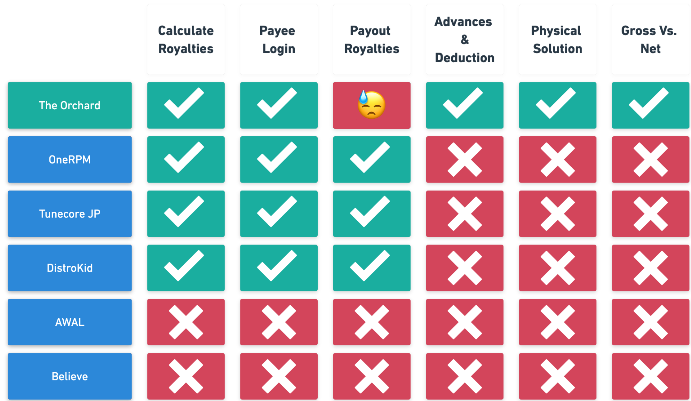

Three modernization projects delivered over 12 months for APQC, a leading nonprofit benchmarking organization: site navigation, course catalog, and customizable forms.
APQC.org serves thousands of member companies across nearly every industry — from Fortune 1000 organizations to consultants, researchers, and process managers. These members rely on APQC for benchmarking data, best practices, training, and frameworks like the Process Classification Framework (PCF).
Working with Tag1 Consulting, I led the UX/UI design across three distinct modernization projects over the course of a year. Each project addressed a different touchpoint in the member experience: how they navigate the site, how they discover and purchase courses, and how they engage with APQC through forms.
As Tag1's embedded design partner for APQC, I worked across three distinct projects that spanned different parts of the member experience. Each required different approaches, but all shared a commitment to clean, accessible, user-centered design.
Redesigned site-wide navigation to improve findability, meet AA accessibility standards, and showcase APQC's full range of research, tools, and training offerings
Transformed how members discover and purchase courses with filtering, detailed landing pages, and streamlined checkout for self-paced, live virtual, and in-person training
Modernized website forms with flexible templates for membership, registration, lead magnets, contact requests, and custom training inquiries
I worked closely with a UX researcher and APQC stakeholders through a structured discovery and design process. We conducted stakeholder interviews, reviewed analytics, examined industry best practices, and validated our designs with both internal and external users.
The validation testing included five participants — two internal stakeholders and three APQC members with varying levels of site experience. All participants successfully navigated the redesigned system and found content easily through the new structure.
The navigation redesign addressed three core problems: key sections hidden behind hamburger menus, the resource library buried within nested menus, and search functionality scattered without clear hierarchy. The solution creates visible, scannable navigation that meets AA accessibility standards.

Clean, scannable navigation with clear hierarchy and visible search
Sidebar descriptions help users understand each section before clicking
Personalized navigation adapts to member status
The forms system needed to support multiple use cases — membership sign-ups, lead magnet downloads, contact requests, registration — while maintaining consistency and reducing whitespace. I created flexible templates that work as full-page forms, popups, and embedded components.
Two-column layout with content on left, form on right, immediate PDF download on submit
Streamlined popup form with no scrolling, all fields above the fold
Two-step registration with password strength indicator and customized post-submit messaging
We transformed how users discover and purchase APQC courses. The new catalog includes filtering by format, topic, and type, plus detailed course pages with clear purchasing options for members and non-members.
Users can filter by format (Self-Paced, Live Virtual, In-Person), topic, and course type
Detailed course pages with sticky purchasing options, learning objectives, and syllabus
Clear pricing for members vs non-members, with bulk and custom options
All three modernization projects successfully launched on APQC.org and are now serving thousands of members daily. The work demonstrates the value of an embedded design partner who can context-switch across different workstreams while maintaining design consistency.
Successfully delivered across three distinct projects — navigation systems, form templates, and course discovery — demonstrating range and adaptability
All projects meet WCAG AA standards, ensuring inclusive experiences for members of all abilities
Navigation tested with 5 participants (internal and external) — all successfully found content with minimal effort
Established design patterns and component library that APQC can extend for future projects
This year-long engagement reinforced the value of embedded design partnerships for complex organizations. APQC didn't need a specialist in navigation, or forms, or course catalogs — they needed a designer who could jump between all three and maintain quality and consistency.
The ability to context-switch between different types of design work — IA and navigation systems, form UX, e-commerce flows — is more valuable than deep specialization in any one area.
Working across multiple projects for the same client builds institutional knowledge that makes each subsequent project faster and stronger. Patterns emerge, decisions compound.